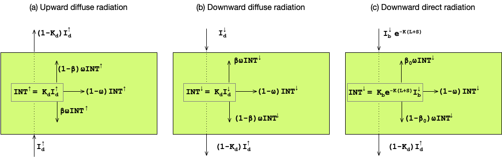
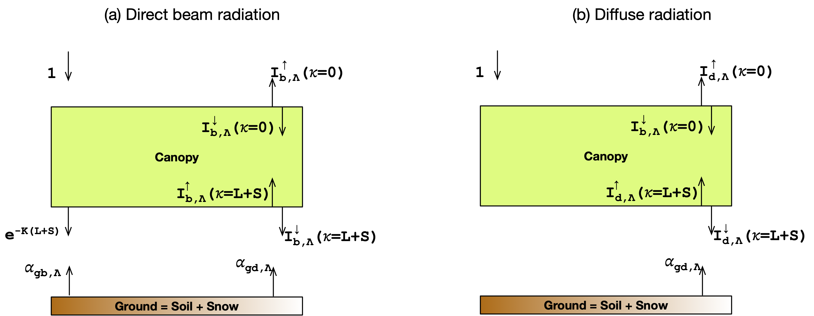

Overview
The main features of ELM shortwave radiation model are as follows:
- The shortwave radiation model in ELM computes the beam (or direct) and diffuse radiation absorbed by the canopy (i.e. sunlit and shaded leaves) and the ground, the radiation reflected to the atmosphere, and surface albedo.
- The model accounts for radiation in two bands: visible (\(< 0.7\mu\)m) and near-infrared (\(\ge 0.7 \mu\)m).
- The model uses the two-stream approximation of Dickenson 19831 and Sellers 19852.
- The model is a single-layer canopy model.
- Sunlit leaf absorbs unscattered direct radiation, scattered direct radiation, and diffuse radiation.
- Shaded leaf absorbs scattered direct radiation and diffuse radiation.
- Snow albedo and the shortwave radiative heating of each snowpack layer is modeled using the hybrid SNICAR-AD model of Dang et al. 20193.
- The sub-grid impacts of topography on solar radiation are parameterized using the approach of Hao et al. 2021 4.
ELM's shortwave radiation model is similar to CLM4.55, and its new features include the hybrid SNICAR-AD model for snow albedo and a parameterization for the sub-grid effects of topography on solar radiation.
The outline of this chapter is as follows. First, the governing equations of the two-stream approximation of the radiative transfer model are presented. Second, the analytical solutions for the upward and downward diffuse radiation using the two-stream approximation are given. Third, the analytical solutions are used for the single-layer canopy configuration to compute the radiation absorbed by the canopy and ground and the radiation absorbed by the canopy for sunlit and shaded leaves. Fourth, the treatment of surface albedo is described. Fifth, the equations describing the total amount of solar radiation are presented.
Two-Stream Approximation Radiative Transfer Model
At any level within the canopy, the upward/downward direct/diffuse radiation is transmitted and intercepted by the canopy. The intercepted radiation is scattered backward, scattered forward, and absorbed by the canopy. The diffuse radiative fluxes via the two-stream approximation are given as
where \(I^{\uparrow}\) is the upward diffuse radiative flux per unit incident flux, \(I^{\downarrow}\) is the downward diffuse radiative flux per unit incident flux, \(K_b \left( = G(\mu)/\mu \right)\) is the optical depth of direct radiation per unit leaf and stem area, \(G(\mu)\) is the relative projected area of leaf and stem in the direction of \(\cos^{-1}(\mu)\), \(\mu\) is the cosine of the solar zenith angle, \(\bar{\mu} \left( = 1/K_d \right)\) is the inverse of the optical depth of diffuse radiation per unit leaf and stem area, \(\omega\) is the scattering coefficient, \(\beta\) is the upscatter parameter for diffuse radiation, \(\beta_0\) is the upscatter parameter for direct radiation, \(L\) is leaf area index, and \(S\) is stem area index.
The equations \eqref{eqn:dif_up}-\eqref{eqn:dif_dn} includes the five optical parameters: \(G(\mu)\), \(\bar{\mu}\), \(\omega\), \(\beta\), and \(\beta_0\). The optical parameters dependent on wavelength band (\(\Lambda\)) are \(\omega\), \(\beta\), and \(\beta_0\). Next, we describe the computation of these optical parameters.

Fig 1. Two-stream approximation of (b) upward diffuse radiation, (b) downward diffuse radiation, and (c) downward direct radiation.
Projected leaf and stem area
ELM uses the Ross-Gourdriaan67 function to compute the projection of leaf area in the direction of the solar radiation as:
with \(\phi_1 = 0.5 - 0.633 \chi_\ell - 0.366 \chi^2_\ell\) and \(\phi_2 = 0.877 (1 - 2 \phi_2)\). The \(\chi_\ell\) is the Ross index or leaf/stem orientation index that is restricted to \(-0.4 \lt \chi_\ell \lt 0.6\). For vertical leaves, \(\chi_\ell = -1\) and \(\bar{\theta} = 90^0\). For horizontal leaves, \(\chi_\ell = 1\) and \(\bar{\theta} = 0^0\). For randomly spherically distributed leaves, \(\chi_\ell = 0\) and \(\bar{\theta} = 60^0\).
Optical depths
The optical depth of direct radiation per unit leaf and stem area is given by
The optical depth of diffuse radiation per unit leaf and stem area is given by
Scattering coefficient
The scattering coefficient accounts for the presence or absence of snow on vegetation as
where the vegetation scattering coefficient, \(\omega_\Lambda^{veg}\), is the sum of reflectances and transmittances, each of which is given as weighted averages of leaf and stem values as
Upscatter for diffuse radiation
The upscatter for diffuse radiation also accounts for the presence of snow on vegetation as
where
Upscatter for direct radiation
The upscatter for direct radiation accounts for the presence of snow on vegetation as
where
Analytical Solutions of the Two-Stream Approximation Radiative Transfer Model
The analytical solutions for upward and downward radiation at a depth equal to the cumulative leaf and stem area index, \(\kappa\), were derived by Sellers (1985) for the two-stream approximation model given by equations \eqref{eqn:dif_up}-\eqref{eqn:dif_dn} under a set of prescribed boundary conditions.
Scattered Beam Radiation
The following boundary conditions are used for the values of downward diffuse radiation per unit incident direct radiation at the top of the canopy (i.e., \(\kappa = 0\)) and upward diffuse per unit incident direct radiation at the bottom of the canopy (i.e., \(\kappa = L + S\)):
with \(\alpha_{gb,\Lambda}\) and \(\alpha_{gd,\Lambda}\) are the ground albedo for direct and diffuse radiation, respectively. Under such boundary conditions, the analytical solution of upward and downward diffuse radiation per unit incident direct radiation is
It should be noted that \(I^{\uparrow}_{b,\Lambda}(\kappa = 0)\) can be interpreted as surface albedo for the diffuse (or scattered) flux of beam radiation.
Diffuse Radiation
The following boundary conditions are used for the values of downward diffuse radiation per unit incident diffuse radiation at the top of the canopy (i.e., \(\kappa = 0\)) and upward diffuse per unit incident diffuse radiation at the bottom of the canopy (i.e., \(\kappa = L + S\)):
Under such boundary conditions, the analytical solution of upward and downward diffuse radiation per unit incident diffuse radiation is
It should be noted that \(I^{\uparrow}_{d,\Lambda}(\kappa = 0)\) can be interpreted as surface albedo for the diffuse (or scattered) flux of diffuse radiation.
Parameters in the Analytical Solutions
The parameters for the analytical equations \eqref{two_str_dir_up_eqn}, \eqref{two_str_dir_dn_eqn}, \eqref{two_str_dif_up_eqn}, and \eqref{two_str_dif_dn_eqn} are presented here.
Common Parameters
The parameters common to both the beam and diffuse radiation are:
Parameters For Scattered Beam Radiation
The parameters for the beam radiation equations \eqref{two_str_dir_up_eqn} - \eqref{two_str_dir_dn_eqn} are:
Parameters For Diffuse Radiation
The parameters for the diffuse radiation equations \eqref{two_str_dif_up_eqn} - \eqref{two_str_dif_dn_eqn} are:
Radiation Absorbed by Sunlit and Shaded Leaves
It is assumed that the shaded leaves only receive diffuse radiation, including scattered direct and diffuse radiation. In contrast, the sunlit leaves receive unscattered direct radiation, scattered direct radiation, and diffuse radiation. Given these assumptions, the radiation absorbed by shaded (\(\overrightarrow{I}_{\ell}^{sha}\)) and sunlit (\(\overrightarrow{I}_{\ell}^{sun}\)) leaves per unit shaded and sunlit leaf area at the cumulative leaf area index \(\kappa\) is given as:
where \(\overrightarrow{I}_{\ell b}(\kappa)\) is the net absorbed beam radiation and \(\overrightarrow{I}_{\ell d}(\kappa)\) is the net absorbed diffuse radiation. These net absorbed beam and diffuse radiation fluxes at the cumulative leaf area index \(\kappa\) are given as:
The canopy level net absorbed beam and diffused fluxes (per unit ground area) are obtained by integrating equations \eqref{eqn_sha_net_rad} - \eqref{eqn_sun_net_rad} over the canopy profile while accounting for sunlit and shaded leaf fraction as
where \(\overrightarrow{I}_{cb}^{sha}\) is the canopy level absorbed beam radiation by shaded leaves, \(\overrightarrow{I}_{cd}^{sha}\) is the canopy level absorbed diffuse radiation by shaded leaves, \(\overrightarrow{I}_{cb}^{sun}\) is the canopy level absorbed beam radiation by sunlit leaves, and \(\overrightarrow{I}_{cd}^{sun}\) is the canopy level absorbed diffuse radiation by sunlit leaves. Furthermore, the total absorbed beam (or diffuse) radiation by the canopy must be the sum of absorbed beam (or diffuse) radiation by sunlit and shaded leaves as:
The sunlit fraction of canopy, \(f_{sun}\), is given by
Single-Layer Canopy Model With the Two-Stream Approximation
ELM represents the canopy as a single layer with a sunlit and shaded leaf. The scattered beam and diffuse upward (or downward) radiation fluxes at the canopy top (or bottom) are given by substituting \(\kappa = 0\) (or \(\kappa = L + S\)) in equations \eqref{two_str_dir_up_eqn} -- \eqref{two_str_dir_dn_eqn} as

Fig 2. Schematic representation of (a) direct beam radiation and (b) diffuse solar radiation through ELM's single-layer canopy and soil configuration.
Radiation Absorbed By Canopy
The amount of beam and diffuse radiation absorbed per unit incident flux by the canopy can be computed as the difference between the incoming and outgoing radiation as
The upward and downward fluxes in the above equations are for \(\kappa = 0\) and \(\kappa = L + S\), respectively, and to simplify the notation, \(\kappa\) has been omitted from the equations.
Radiation Absorbed By Sunlit and Shaded Leaves
Using analytical solutions of the two-stream approximation, Dai et al. 20048 provided analytical solutions for the radiation absorbed by the sunlit and shaded leaves presented below.
Sunlit leaves
The analytical solution of the beam radiation absorbed by sunlit leaves is given as
where the parameters are given as follows
Using equation \eqref{eqn_can_b_conservation}, the beam radiation absorbed by shaded leaves is computed as
where the first term on the right hand side is given by equation \eqref{eqn_can_b_absorb}.
Shaded leaves
The analytical solution of the beam radiation absorbed by shaded leaves are given as
where the parameters are given as follows
Using equation \eqref{eqn_can_b_conservation}, the beam radiation absorbed by shaded leaves is computed as
where the first term on the right hand side is given by equation \eqref{eqn_can_d_absorb}.
Radiation Absorbed By Ground
The beam and diffuse radiation absorbed by the ground are computed as the difference of the incoming and the outgoing radiation.
Ground Albedos
The direct beam ground albedo, \(\alpha_{gb,\Lambda}\), and diffuse ground albedo, \(\alpha_{gd,\Lambda}\), are weighted combination of "soil" and snow albedo as
where \(f_{sno}\) is the snow fraction.
Soil Albedo
The soil albedo for the various ELM landunits remains the same as in CLM4.55 are:
Glacier Albedo
Lake and Wetland Albedo
Under frozen conditions, the albedos are a function of the solar zenith angle \(\mu\).
Otherwise, the albedos are constant.
Bare Soil Albedo
Soil albedo varies with color class
where \(\Delta\) depends on the volumetric water content of the first soil layer, \(\theta_1\), as \(\Delta = 0.11 - 0.4\theta_1\), and \(\alpha_{sat,\Lambda}\) and \(\alpha_{dry,\Lambda}\) are albedos for saturated and dry soil color classes.
Snow Albedo
The hybrid SNICAR-AD model of Dang et al. (2019)3 is used to compute snow albedo and the contribution of solar absorption to the heating of each snow layer.
Parameterization for Sub-Grid Effect of Topographic on Solar radiation
The surface abedos given by equation \eqref{eqn_g_dir} - \eqn{eqn_g_dif} neglect topography by assuming a plane-parallel Earth. Hao et al. (2021)4 developed a parameterization for sub-grid topographic effects on solar radiation that essentially modify the surface albedo by equation \eqref{eqn_g_dir} - \eqn{eqn_g_dif}. The section on TOP Parameterization presents a detailed description of the parameterization.
Solar Radiation Fluxes
Using the equations describing beam and diffuse radiation absorbed by the canopy (equations \eqref{eqn_can_b_absorb} and \eqref{eqn_can_b_absorb}) and ground (equations \eqref{eqn_g_b_absorb} - \eqref{eqn_g_d_absorb}) per unit incoming flux, the total absorbed radiation by canopy and ground is given by
where \(S_{b,\Lambda}^{atm, \downarrow}\) and \(S_{d,\Lambda}^{atm, \downarrow}\) are the downward beam direct and downward diffuse atmospheric flux, respectively.
Additionally, the conservation of solar radiation in ELM is ensured by the following equation:
where the third term on the right hand side represents the reflected solar radiation to the atmosphere.
The photosynthesis and transpiration processes of sunlit and shaded leaves depend on the solar radiation they absorbed in the visible waveband. The absorbed photosynthetically active (visible waveband) radiation per unit leaf area is given as:
where \(L^{sun}\) and \(L^{sha}\) are the sunlit and shaded fraction of the canopy, respectively, and are computed using equation \eqref{eqn_sun} as
-
Robert E Dickinson. Land surface processes and climate—surface albedos and energy balance. In Advances in geophysics, volume 25, pages 305–353. Elsevier, 1983. ↩
-
Piers J Sellers. Canopy reflectance, photosynthesis and transpiration. International journal of remote sensing, 6(8):1335–1372, 1985. ↩
-
Cheng Dang, Charles S Zender, and Mark G Flanner. Intercomparison and improvement of two-stream shortwave radiative transfer schemes in earth system models for a unified treatment of cryospheric surfaces. The Cryosphere, 13(9):2325–2343, 2019. ↩↩
-
Dalei Hao, Gautam Bisht, Yu Gu, Wei-Liang Lee, Kuo-Nan Liou, and L Ruby Leung. A parameterization of sub-grid topographical effects on solar radiation in the e3sm land model (version 1.0): implementation and evaluation over the tibetan plateau. Geoscientific Model Development, 14(10):6273–6289, 2021. doi:https://doi.org/10.5194/gmd-14-6273-2021. ↩↩
-
K. Oleson, D. Lawrence, G. Bonan, B. Drewniak, M. Huang, C. Koven, Z. M. Subin, and S. C. Swenson. Technical description of version 4.5 of the community land model (clm), ncar technical note. Technical Report NCAR/TN-503+ STR, National Center for Atmospheric Research (NCAR), Boulder, CO, USA, 2013. doi:https://doi.org/10.5065/D6RR1W7M. ↩↩
-
Juhan Ross. Radiative transfer in plant communities. Vegetation and the Atmosphere 1, 1:13–55, 1975. ↩
-
Jan Goudriaan. Crop micrometeorology: a simulation study. Wageningen University and Research, 1977. ↩
-
Yongjiu Dai, Robert E Dickinson, and Ying-Ping Wang. A two-big-leaf model for canopy temperature, photosynthesis, and stomatal conductance. Journal of climate, 17(12):2281–2299, 2004. ↩